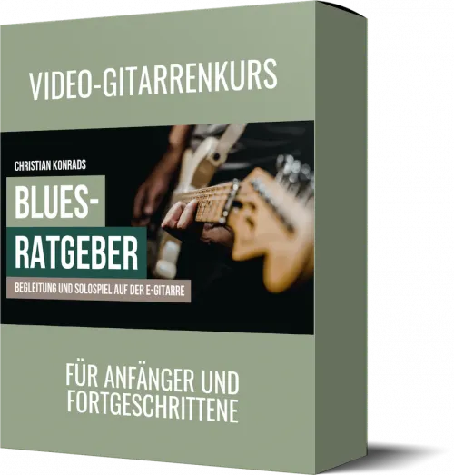
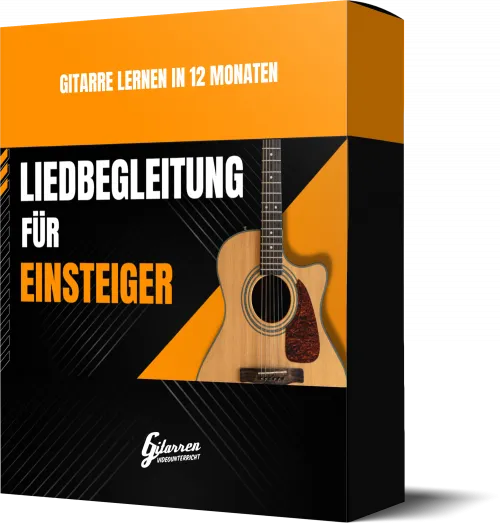
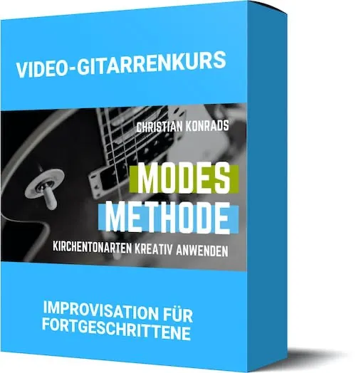
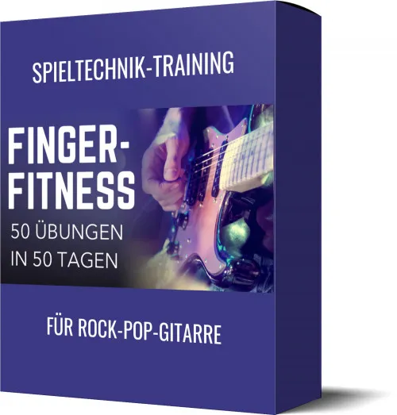
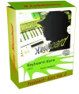

Blues-Ratgeber - Begleitung und Solospiel auf der E-Gitarre
Produktprofil · Marktplatz-Daten 2026-10-09 · Verkaufsseiten-Recherche 2026-10-09 · Kategorien: Dancing & Music
- Blues-Ratgeber - Begleitung und Solospiel auf der E-Gitarre ist ein/e Mitgliederbereich & Videokurs in Dancing & Music, vertrieben über den Digistore24-Marktplatz von Anbieter musiklehrer, gelistet seit 2021-06-17.
- Listenpreis $78.60; Digistore24 meldet 16 % Checkout-Konversion, 2.63 % Stornierungsquote und 30 % Affiliate-Provision.
- Verdienst pro Verkauf (Affiliate): $22.88 (Anbieter-seitige Statistik, keine Prognose).
Interesse an Blues-Ratgeber - Begleitung und Solospiel auf der E-Gitarre? Aktueller Preis, Boni und Garantiebedingungen finden Sie auf der offiziellen Seite des Anbieters:
Offizielle Verkaufsseite ansehen
Affiliate-Link (Werbung) — wir verdienen ggf. eine Provision, ohne Mehrkosten für Sie.

Marktplatz-Daten
| Produkttyp | Mitgliederbereich & Videokurs |
|---|---|
| Preis | $78.60 (Single payment) |
| Affiliate-Provision | 30 % |
| Garantie/Rückgabe | Laut Verkaufsseite des Anbieters — vor dem Kauf auf der offiziellen Seite prüfen |
| Anbieter | musiklehrer (gelistet seit 2021-06-17) |
| Marktplatz-Statistiken* | Checkout-Konversion 16 % · Stornoquote 2.63 % · Verdienst/Verkauf $22.88 |
* Anbieter-seitige Statistiken von Digistore24; sie hängen von der Traffic-Qualität ab und sind keine Prognose.
Marktplatz-Beschreibung des Anbieters
Dieser Kurs vermittelt die stiltypische Begleitung und das Solospiel im Blues.Egal, ob du gerade erst anfängst, dich mit Blues zu beschäftigen, oder ob du bereits über grundlegende Blues-Kenntnisse verfügst, hier kannst du dein Können garantiert noch verbessern. Inhalt des Kurses 25 Videos (insgesamt über 3 Stunden Laufzeit) 6 komplette Beispielstücke mit Band-Begleitungen (Backingtracks) alle Stü…
Von der Verkaufsseite des Anbieters
Seitentitel: Blues-Ratgeber
Hauptüberschrift
Der komplette Blues-Ratgeber für Gitarristen
Abschnitts-Überschriften
- Von den ersten Akkorden bis zum stilechten Solo!
- Worum geht es in diesem Kurs?
- Das sagen die Kursteilnehmer:
- Vielleicht bis gleich im Kurs :-)
Einstiegstext
Ganz einfach: Der Blues ist die Wurzel vieler Musikstile – von Rock über Jazz bis hin zu Pop. Wer seine Sprache versteht, gewinnt nicht nur einen authentischen Sound, sondern auch ein solides Fundament fürs Gitarrespielen. Einsteiger profitieren, weil typische Blues-Begleitungen leicht erlernbar sind. Fortgeschrittene wiederum entdecken im Blues ein riesiges Spielfeld für Improvisation und Ausdruck – vom klassischen Call-and-Response bis zu modernen Solotechniken. In diesem Kurs erhältst du einen klar strukturierten Leitfaden, der dich Schritt für Schritt dorthin bringt.
Mir gefällt die ruhige und inspirierende Art und Weise, mit der die Inhalte vermittelt werden. Die Inhalte sind auf die praxisrelevanten Dinge reduziert und man bekommt nützliche Tipps und Tricks um die Inhalte auch im Bandkontext umzusetzen.
Der Kurs ist sehr strukturiert aufgebaut und ist sehr verständlich erklärt. Da ich schon einige Kurse bei Christian gebucht habe, bin ich das aber auch gewohnt. Er ist halt ein Profi und kann lt. seiner jahrelangen Erfahrung sein Wissen gut an den Mann/Frau weitergeben.
Am Ende des Kurses kannst du Blues-Songs abwechslungsreich und authentisch begleiten. Außerdem hast du viele wichtige Zutaten für das Solospiel in deinem Repertoire. Typische Tonleitern, Licks, Farbtöne, Turnarounds, und mehr.
Fragen, die die Verkaufsseite beantwortet
- Warum lohnt es sich, als Gitarrist Blues zu lernen?
- Wer ist Christian Konrad?
Recherche-Methode: rohes HTML · 1011 Wörter · Qualität: rich · recherchiert am 2026-10-09. Vollständige Recherche-Datei (MD) ↗
Wie Produkte dieser Art geliefert werden
Allgemeiner Hinweis zu diesem Produkttyp (keine anbieterspezifische Anleitung): Videokurse laufen über einen Mitgliederbereich: nach dem Checkout erhalten Sie Zugangsdaten per E-Mail und können die Lektionen in Ihrem eigenen Tempo streamen. Für die genaue Anwendung von Blues-Ratgeber - Begleitung und Solospiel auf der E-Gitarre sind die offizielle Verkaufsseite und die enthaltenen Materialien maßgeblich.
Gut zu wissen
- Keine Garantie-Formulierung in unserer Recherche gefunden — bestätigen Sie das Rückgabefenster auf der offiziellen Seite, bevor Sie kaufen.
Häufige Fragen zu Blues-Ratgeber - Begleitung und Solospiel auf der E-Gitarre
Was ist Blues-Ratgeber - Begleitung und Solospiel auf der E-Gitarre?
Blues-Ratgeber - Begleitung und Solospiel auf der E-Gitarre ist ein Angebot des Typs „Mitgliederbereich & Videokurs" im Digistore24-Marktplatz, Anbieter: musiklehrer, gelistet seit 2021-06-17. Eingepflegt unter Dancing & Music. Digistore24 wickelt Checkout, Lieferung und Rückgaben ab.
Wie viel kostet Blues-Ratgeber - Begleitung und Solospiel auf der E-Gitarre?
Der Digistore24-Marktplatz listet es für $78.60 (single payment). Preise legt der Anbieter fest und können sich ändern — die offizielle Verkaufsseite zeigt den aktuellen Preis.
Gibt es eine Geld-zurück-Garantie für Blues-Ratgeber - Begleitung und Solospiel auf der E-Gitarre?
Unsere Verkaufsseiten-Recherche hat keine explizite Garantie-Formulierung gefunden. Viele Digistore24-Produkte bieten 60 Tage Geld-zurück, aber das legt jeder Anbieter selbst fest — bestätigen Sie es auf der offiziellen Verkaufsseite, bevor Sie kaufen.
Ist Blues-Ratgeber - Begleitung und Solospiel auf der E-Gitarre seriös?
Wir bewerten keine Seriosität — wir veröffentlichen überprüfbare Zahlen: Anbieter musiklehrer (gelistet seit 2021-06-17), Checkout-Konversion 16 %, Stornoquote 2.63 %, Affiliate-Verdienst/Verkauf $22.88 (alles Anbieter-seitige Marktplatz-Statistiken). Lesen Sie unsere Recherche-Standards und entscheiden Sie anhand der Zahlen.
Wo kann ich Blues-Ratgeber - Begleitung und Solospiel auf der E-Gitarre sicher kaufen?
Nur über die offizielle Verkaufsseite, die auf dieser Seite verlinkt ist (Checkout und Rückgaben laufen über Digistore24). Prüfen Sie dort Preis und Garantie vor der Bestellung. Der Link ist ein Affiliate-Link — der Kauf unterstützt diese Website ohne Mehrkosten für Sie.
Ähnliche Angebote in Tanzen & Musik

Die Party DJ Setbook Business ENTERPRISE-Lizenz (B2B) richtet sich an Unternehmen, DJ-Agenturen, Veranstalter, Hotels, Clubs, Verleiher und Organisationen, die

Keyboard Videokurs für Anfänger Eine 52 wöchige Komplettausbildung für Keyboard Anfänger OHNE Vorkenntnisse NICHT DEN PROMO LINK auf der rechten Seite VERWENDEN

Keyboardkurs der 1000 Tipps für fortgeschrittene Spieler NICHT DEN PROMO LINK auf der rechten Seite VERWENDEN! >ACHTUNG! HIER KLICKEN< um auf ONLINEMUSIKS

Die Party DJ Setbook Business PRO-Lizenz (B2B) richtet sich an Unternehmen, DJ-Agenturen, Veranstalter, Hotels, Clubs, Verleiher und Organisationen, die ihren D
Weitere Angebote von musiklehrer

Dieser Kurs bringt Gitarren-Einsteigern in 12 Monaten bei, beliebige Lieder (aus Liederbüchern etc.) auf der Gitarre zu begleiten. Schritt für Schritt werden al

In diesem Kurs für fortgeschrittene Gitarristen lernst du, die sieben Modes (Kirchentonarten) der Durtonleiter als interessante Klangfarben für Improvisation un
Ein Videokurs für Gitarristen, egal ob Anfänger oder Fortgeschrittene, zum Erlernen des Gitarrenspiels nach Noten. Der professionelle Gitarrenlehrer Christian K

Dieser Kurs stellt eine Sammlung der besten Fingerübungen für Gitarristen dar. Fingerübungen gehören für jeden ambitionierten Gitarristen zum Übealltag. Wie bei
Ähnliche Preislage in Tanzen & Musik
Dieser Kurs bringt Gitarren-Einsteigern in 12 Monaten bei, beliebige Lieder (aus Liederbüchern etc.) auf der Gitarre zu begleiten. Schritt für Schritt werden al

Singen lernen – Das musst Du wissen (Online Video-Kurs)Der ultimative Grundlagenkurs für alle Sänger in Klassik und Pop 31 Lektionen; 2 h Video Du lernst alles

Endlich richtig gut Keyboard spielen können ! In diesem Kurs lernst Du 8 neue Lieder mit 7 neuen Akkorden und Rhythmus spielen. Du lernst die Halbtöne (schwarze
Ähnliche Suchanfragen
Wo Sie es sich ansehen können
Wo Sie es sich ansehen können
Aktuelle Preise, Garantie und Boni finden Sie auf der offiziellen Verkaufsseite:
Offizielle Verkaufsseite ansehen
Das ist ein Affiliate-Link (Werbung) — kaufen Sie darüber, verdienen wir ggf. eine Provision, ohne Mehrkosten für Sie.
Quellen & weiterführende Informationen
- Offizielle Verkaufsseite (aktueller Preis, Garantie, Boni): www.gitarrenvideounterricht.de/kurse/blues-ratgeber/ (Affiliate-Link)
- Öffentliche Digistore24-Produktseite: digistore24.com/product/394565
- Vollständige Recherche-Datei (Markdown, versioniert): content/products/36961-blues-ratgeber-begleitung-und-solospiel-auf-der-e-gitarre.md
- Affiliate-Supportseite des Anbieters: www.gitarrenvideounterricht.de/partnerprogramm/
- Marktplatz-Kategorie: Tanzen & Musik
Wie wir Produkte wie Blues-Ratgeber - Begleitung und Solospiel auf der E-Gitarre bewerten
Sechs Prüfungen, ausschließlich mit offiziellen Marktplatz-Zahlen. Die vollständige Bewertungsmethode lesen · unsere Recherche-Standards & Kennzeichnung.
Fragen oder eigene Erfahrungen mit Blues-Ratgeber - Begleitung und Solospiel auf der E-Gitarre?
Praxis-Tests veröffentlichen wir erst, nachdem wir ein Produkt selbst gekauft haben — aber Ihre Erfahrung hilft anderen Lesern: Diskussion zu Blues-Ratgeber - Begleitung und Solospiel auf der E-Gitarre auf GitHub starten/verfolgen. Falsche Zahl gefunden? Korrektur melden — jede Seite zeigt ihre Datenstände, Korrekturen gelten für die ganze Website.